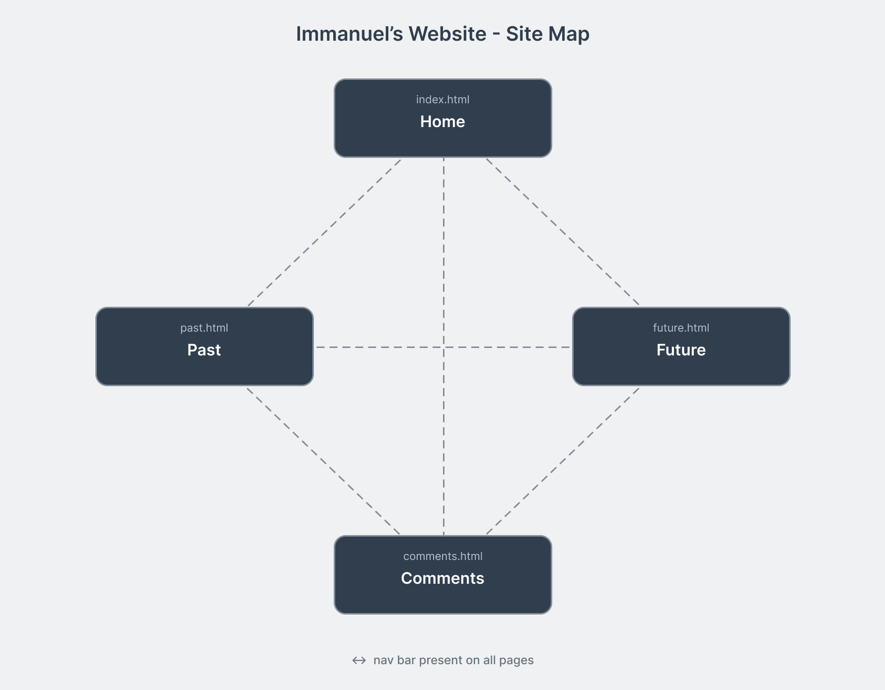

Design Comments
This page covers the design decisions I made when building this site.
a) Overall Website Structure
The site has four pages:
- index.html - home page, intro and overview
- past.html - computing background
- future.html - career goals
- comments.html - this page, design reflection
All four pages link to each other through the nav bar at the top. You can get anywhere from anywhere without hitting back.
All styles are in one external file, websystems.css, linked from every page with:
<link rel="stylesheet" type="text/css" href="websystems.css">
Site map showing how all the pages connect:

b) Internal Page Structure
Every page uses the same structure:
<div id="page-wrap"> -- outer window frame, 860px, centred
<header class="site-header"> -- title bar
<nav class="top-nav"> -- toolbar with navigation buttons
<div class="main-content"> -- recessed content panel
<footer class="page-footer"> -- status bar
</div>
I used HTML5 semantic elements (header, nav, footer) where the element name describes the content. The main content area uses a div because it is a generic container and that is what div is for.
index.html has the intro-block div, a photo, and two lists. past.html has a timeline table and two lists. future.html has a certifications table and skill lists. comments.html (this page) is the longest page, with the big selector table and all the design sections.
c) Styles Used
All styles are in websystems.css. Every selector is listed below:
| Selector | Type | What it does | Where used |
|---|---|---|---|
body |
Element | Teal desktop background (#008080), Tahoma font, 12px base size, no margin, 20px top and bottom padding so the window sits off the edges | All pages |
#page-wrap |
ID | 860px wide, centred with auto margins, grey window background (#ece9d8). Raised border using border-color shorthand (light top-left, dark bottom-right) and outline for the outer window frame effect. | All pages |
.site-header |
Class | XP title bar using a linear-gradient from dark blue (#0a246a) on the left to light blue (#a6caf0) on the right. White text, 5px 8px padding. | All pages |
.site-header h1 |
Descendant | 13px bold, removes margin, text-shadow to make it look like XP window title text | All pages |
.site-header p |
Descendant | Subtitle: 11px, light blue (#c8dff8) so it's visible on the gradient but less prominent than the title | All pages |
.top-nav |
Class | Classic XP toolbar grey (#d4d0c8), raised top border, sunken bottom border, small padding | All pages |
.top-nav ul |
Descendant | Removes bullet points and default padding from the nav list | All pages |
.top-nav ul li |
Descendant | Inline so nav links sit side by side like toolbar buttons | All pages |
.top-nav ul li a |
Descendant | Styled as raised XP buttons: grey background (#d4d0c8), black text, raised border (white top-left, grey bottom-right). Inline-block with small padding. | All pages |
.top-nav ul li a:hover |
Pseudo-class | Slightly darker grey on hover to show the button responding | All pages |
.top-nav ul li a.current |
Compound (class + descendant) | Reversed border (grey top-left, white bottom-right) and darker grey background - the sunken/pressed button state for the active page | All pages |
.main-content |
Class | White recessed panel: white background, margin inside the grey window, 12px 16px padding. Sunken border (dark top-left, light bottom-right) gives the inset panel look. | All pages |
.main-content h2 |
Descendant | 13px bold, dark XP blue (#0a246a), light grey border-bottom as a divider | All pages |
.main-content img |
Descendant | Max-width 300px, block display, sunken border matching the content panel style | index.html, comments.html |
.intro-block |
Class | Styled like a Windows groupbox: thin blue-grey border (#7f9db9), very light blue background (#f0f4ff). Used on the intro paragraph on the home page. | index.html |
.emph |
Class | Bold and dark blue (#0a246a). Applied via span elements. | All pages |
table |
Element | Full width, collapsed borders, 12px font, 8px margin | past.html, future.html, comments.html |
th |
Element | Classic XP ListView column header: toolbar grey background (#d4d0c8), black text, grey right and bottom borders, bold, left-aligned | past.html, future.html, comments.html |
td |
Element | 3px 8px padding, very light grey borders matching the window background colour | past.html, future.html, comments.html |
tr:hover td |
Pseudo-class + descendant | XP selection highlight: blue background (#316ac5) with white text when hovering over a table row | past.html, future.html, comments.html |
ul, ol |
Grouped element | Line-height 1.6 on all lists | All pages |
a |
Element | Classic IE link blue (#0000ff) | All pages |
a:hover |
Pseudo-class | Slightly darker blue (#0000cc) on hover | All pages |
a:visited |
Pseudo-class | Classic visited link purple (#800080), matching old IE default | All pages |
pre |
Element | White background, grey border, Courier New font, 11px, pre-wrap. Used for the structure diagram and code examples on this page. | comments.html |
code |
Element | Inline: white background, light grey border, Courier New 11px. Used in the selector table. | comments.html |
.win-buttons |
Class | Container div for the three window control buttons. Position: absolute with right: 6px, top: 4px inside the nav bar (which has position: relative) so they always sit pinned to the far right of the toolbar. | All pages |
.btn-minimize and .btn-maximize |
Class (separate) | XP-style minimize and maximize buttons: 21x21px inline-block, blue vertical gradient (#6da3e2 to #2e5fa8), raised border with lighter blue top-left and darker blue bottom-right. Defined separately in the CSS. | All pages |
.btn-close |
Class | XP-style close button: same size as the other buttons but with a red gradient (#e86060 to #c02020) and matching red raised border | All pages |
.page-footer |
Class | Styled like a Windows status bar: same grey as the toolbar (#d4d0c8), black text, 3px 8px padding, white top border, left-aligned text, 11px font | All pages |
p |
Element | Line-height 1.5 | All pages |
h3 |
Element | 12px bold, same dark blue as h2, 12px top margin | comments.html |
d) Graphic Design
Visual Theme
I designed the site to look like a Windows XP application window. The layout maps directly onto XP window components: the title bar, toolbar, recessed content area, and status bar at the bottom. Everything is done with pure CSS and HTML - no images for the chrome, no JavaScript.
Colours
All colours come from the Windows XP Luna theme palette:
- #008080 - the classic Windows teal desktop background
- #0a246a - title bar dark blue (left side of gradient)
- #a6caf0 - title bar light blue (right side of gradient)
- #ece9d8 - XP window background grey
- #d4d0c8 - toolbar and button grey
- #316ac5 - XP selection highlight blue
- #0000ff - classic IE link blue
- #800080 - classic IE visited link purple
The raised and sunken border effects use border-color shorthand with #ffffff on the highlight sides and #808080 or #404040 on the shadow sides. This is how Windows drew its 3D controls before flat design.
No bad colour combinations from the spec are used. The teal desktop is dark but the content sits inside a white panel so readability is fine.
Fonts
Tahoma is the system font Windows XP used for almost everything. Arial is the fallback if Tahoma isn't available. Base size is 12px which matches the default XP system font size. Courier New is used for code and pre blocks as it was the standard monospace font in that era.
Layout
860px fixed width, centred. The grey desktop background shows around the window. The raised outer border and darker outline create the three-dimensional window frame effect. Inside, the content area is a white recessed panel with the border direction reversed, so it looks inset into the grey window.
The nav buttons have raised borders that flip to sunken when the current page is active, the same way XP toolbar buttons worked.
What worked
The raised/sunken border trick with just border-color gives a convincing 3D effect without needing any images. The title bar gradient looks close to the real XP title bar. The table row hover highlight in XP selection blue is a small touch that fits the theme.
What could be better
A real XP window would have min/max/close buttons in the title bar and a window icon on the left. These could be added with more CSS work. The fonts on the page depend on Tahoma being installed which isn't guaranteed on every system.
e) Accessibility
Alt Text
The image on index.html:
<img src="images/me.png" alt="A photo of me and friends playing pool">
Photo is mine so no credit needed. The alt text describes what the image shows. Screen readers read this aloud and it also shows if the image fails to load.
The site map image on this page also has alt text.
CSS Off Test
Tested in Firefox with CSS disabled (View, Page Style, No Style). With CSS off:
- All text content is readable
- Nav links still work - can navigate between all four pages
- Tables still display as normal HTML tables
- Lists and headings keep their structure
- Reading order (header, nav, content, footer) still makes sense
The XP styling is entirely visual - the HTML structure is valid semantic HTML5 so it still works without the CSS.
Other
- Links use descriptive text, not just "click here"
- No JavaScript - works with JS disabled
- Content is all inside the white recessed panel so readability is good
- No horizontal scrolling at normal sizes
- No animations or flashing